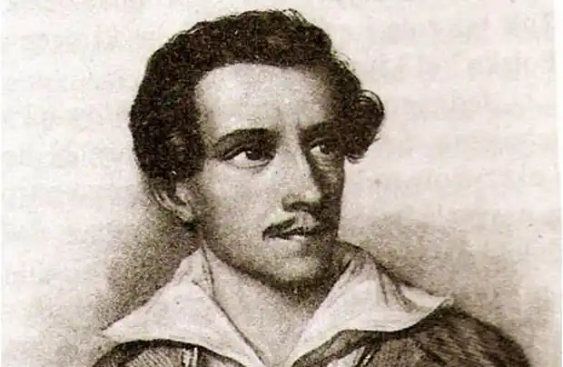

СЛОВАЦЬКИЙ, Юліуш (Slowacki, Juliusz — 04.09.1809, Кременець, Україна — 03.04.1849, Париж) — польський поет.Батько Словацького, Евзебіуш Словацький, викладав риторику та поетику у Кременецькому ліцеї, в останні роки життя був професором Віденського університету і помер від туберкульозу в 1814 р. Мати — Саломея Янушевська, донька управителя маєтками Кременецького ліцею. Овдовівши, вона вдруге вийшла заміж за професора Віденського університету, доктора медицини Августа Бекю. Роки дитинства поета збіглися з часом загострення революційної ситуації у Вільно. Було розкрито діяльність таємних університетських товариств. Почалося слідство, потім арешти, заслання. Слідством керував сенатор Новосільцев. Вітчим Словацького, професор Бекю, пристав на його бік. У майбутньому це ускладнило стосунки Словацького з прогресивними колами суспільства. У 1824 р. А. Бекю несподівано загинув від удару блискавки.
У 1825 р. Словацький закінчив курс навчання у Віденській гімназії і вступив до Віденського університету на факультет етичних і політичних наук, де вивчав юриспруденцію та літературу, особливо захоплюючись секретами поетики. У ці роки він був приголомшений стражданнями, які позначилися на його характері: нерозділеним коханням до Ядвіґи Снядецької і самогубством єдиного друга Людвіга Шпітцнагеля, який, як зрозумів Словацький, вкоротив собі віку від безнадії.
Перші відомі твори Словацького датуються 1825 р. Це "Елегія", переклад з А. де Ламартіна, і "Місяць", у якому він наслідує Ламартіна. У ранніх творах Словацький захоплюється темою переваги мрії над дійсністю, національною екзотикою ("Українська дума"), орієнталістськими мотивами під впливом "Кримських сонетів" А. Міцкевича ("Шанфарі"). У 1826 р. Словацький закінчив університет і переїхав у Кременець, де тоді жила його мати. Там він активно вивчав англійську мову і читав твори Дж. Н. Г. Байрона в оригіналі. Тоді ж таки Словацький остаточно зрозумів, що літературна творчість — його єдине покликання. Спадщини, яку залишив його батько, вистачало для того, щоби жити і не ходити на службу. Проте мати мріяла, що син стане успішним чиновником, і Словацькому довелося поступитися. У лютому 1825 р. він переїхав у Варшаву і став чиновником-практикантом у Державній комісії фінансів. Його лякала перспектива сірих чиновницьких буднів, і він доклав усіх зусиль, щоб увійти до літературного середовища Варшави, де тоді з особливою силою спалахнула суперечка між поетами-романтиками і прибічниками класики. Чвари загострилися, головно, через передмову А. Міцкевича до петербурзького видання його віршів. У Варшаві Словацький багато писав. Були створені друга редакція поеми "Шанфарі", поеми "Гуго" ("Hugo", 1829), "Ченець" ("Mnich", 1830), "Араб" ("Arab", 1829-1830), "Ян Белецький" ("Jan Bielecki", 1830), "Змій" ("Zmija", 1831), драми "Міндовг, король литовський" ("Mindowe, kroi litewski", 1831) і "Марія Стюарт" ("Marja Stuart", 1830). У його поемах помітний вплив Байрона, трапляються і запозичення з Міцкевичевого "Конрада Валленрода", але при цьому вони вирізняються бездоганною поетичною майстерністю, віртуозним метром. 15 листопада 1830 р. поет віддав свої поеми і драми у цензуру, сподівався на швидку публікацію. Але через два тижні у Варшаві спалахнуло повстання. Словацький негайно приєднався до повстанців і створив низку революційних віршів. Серед них був і "Гімн" ("Hymn" — "Bogorodzico, Dziewico!", 1830), який повстанці поклали на музику і співали. На зламі 1830—1831 pp. з'явилися його "Ода до вольності" ("Oda do wolnosci"), "Куліг" ("Kulik"), "Пісня литовського легіону" ("Piesn legionu litowskiego"). У цих творах Словацький виступає за повну незалежність Польщі. Навесні 1831 p. Словацький відмовився від посади у Комісії фінансів і перейшов на дипломатичну службу. Невдовзі на вимогу матері, котра боялася, щоби Словацький після поразки повстання не потрапив на заслання, він вирушив у Вроцлав, а потім у Дрезден. У липні-серпні 1831 р. виконував дипломатичне доручення, яке полягало у перевезенні повстанських листів до польських місій у Парижі та Лондоні. Про поразку повстання Словацький дізнався після повернення з Лондона у Париж і вирішив залишитися у столиці Франції. Захопившись у Лондоні В. Шекспіром, він продовжив вивчати його творчість і в Парижі. Щоб читати П. Кальдеро-на в оригіналі, Словацький вивчав іспанську мову. Часто слухав романтичну оперу. Все це стало джерелом його драматургічної майстерності. Враження поповнювалися і фактами реального життя: у Францію прибували маси польських повстанців, вони жили сподіваннями нової революції. У середовищі польських емігрантів постійно точилися суперечки про причини поразки повстання, що породжували чвари і руйнували єдність. Словацький болісно переживав цей розкол (стаття "Париж"). У Парижі Словацький підготував видання творів у двох томах (1832). Польська еміграція поставилася до його книги доволі прохолодно. Посилилися ідейні розбіжності Словацького й еміграції, і поет вирішив оселитися у Швейцарії. З 1833 до 1835 р. він жив у Женеві, усамітнившись від політичних дискусій і здобувши можливість на самоті переосмислити пережите. Так з'явилася лірико-філософська за жанром поема "Час роздумів" ("Godzina mysli", 1833), сповнена враженнями юності. У 1833 р. Словацький підготував до друку і видав 3-й том "Віршів" ("Poezje"). До нього увійшли повстанські пісні і написані в Парижі поетичні повісті "Ламбро, грецький повстанець" ("Lambro, powstaiica grecki") та "Дума про Вацлава Жевуського". Того ж року поет розпочав працювати над драматичною трилогією у віршах "Кордіан" (підзаголовок "Коронаційна змова"; "Kordian"). Перша частина побачила світ у 1834 р. Про існування другої нічого не відомо, а третю автор спалив. Перед першою частиною Словацький подав "Уготування" та "Пролог" своєрідний вступ до трилогії. Тут він вступає у полеміку з А. Міцкевичем, котрий уособлював Польщу в образі "Христа народів". Словацький пише, що поляки знемагають у рабстві за гріхи батьків, а образ Спасителя змінює образом "Вінкельрода народів". Вінкельрод — швейцарський герой, який у битві при Земпаху (1386) притягнув до себе і встромив у своє тіло кілька ворожих списів, щоби зробити пролом у ворожих лавах. Словацький вважав, що польські події 1830 р. створили сприятливу атмосферу для Липневої революції у Франції та визвольної боротьби у Бельгії. Тільки в цьому для нього полягала історична місія польського повстання у європейських масштабах. Польща виконала вінкельродівську роль в історії, але в майбутньому поет передбачав нові бої за свободу. Текстом драми "Кордіан" він намагався висловити свою точку зору на причини поразки повстання й оцінити емігрантський рух. Його висновок такий: боротьба зайшла в глухий кут, народ йшов за фальшивим пророком, духовна недолугість шляхти і непереконливість ідеалів занапастили повстання. Більше того, ідеали шляхти були незрозумілими для народу. Драма вийшла з друку анонімно. Проте ім'я автора дуже швидко встановили, і еміграція знову відзначила лише суто поетичну обдарованість Словацького, натомість варшавські підпільники зачитували книгу до дірок. Вона стала об'єктом репресій з боку царської адміністрації. Наприкінці 1834 p. Словацький створив романтичну трагедію-казку "Баладина" ("Balladyna"). Поет показує абсурдність світу, де все відбувається всупереч ідеалові. Казкові сили, бажаючи добра, чинять зло, люди отримують не те, до чого прагнуть. На троні царює спочатку дурень, а потім злочинниця. До драми також увійшли низка запозичених сцен із п'єс Шекспіра, уривки з балад Міцкевича. Це нагромадження подане як іронічне порівняння непорівнюваних понять: ідеального та реального, трагічного та комічного, новаторського й епігонського. Словацький у листах не раз підкреслював, що послуговувався аріостівською іронією. Граючись із визнаними шедеврами літератури, поет наче грався з усталеними думками про світ, показував їхню непереконливість. Фінал трагедії, як і годиться у казці, є дидактичним. Зло покаране. У листах до матері 1834—1836 pp. Словацький пише про посилення почуття безнадії у ставленні до становища в Польщі. Депресивні тенденції позначилися і на його драмі "Горштинський" ("Horsztynski", 1835). Це трагедія в прозі. Словацький не завершив цього твору і не дав йому назви. Назва "Горштинський" належить видавцеві творів Словацького. Тема трагедії — згубна глупота зарозумілості шляхтичів, що призвела до краху Речі Посполитої. У 1836 p. Словацький здійснив дворічну подорож. Він відвідав Італію, Грецію, Єгипет, Палестину, Сирію. На матеріалі вражень була створена велика поема "Подорож з Неаполя по святих місцях" ("Podroz do Ziemi Swietej z Neapolu", 1836-1839). Вона збереглася не повністю. Італія і Греція нагадують поетові сторінки їхньої героїчної боротьби за свободу, гордий подвиг Байрона, славу Костюшка. Його думка звертається до сивої давнини, до героїзму спартанців, які загинули під Фермопілами: "Серце польське зав мира від сорому перед духом Греції тих суворих літ". Після відвідин Палестини і Сирії у його творчості виникає образ поета-пророка, душу якого, як уста біблійного пророка Ісайї, очищає і запалює вогнем серафим. Після повернення в Італію в 1837 p. Словацький написав поему "Ангеллі" ("Anhelli", опубл. 1838). Ця філософсько-символічна поема — притча про народ і його вождя-пророка, про розпорошення польських емігрантських і революційних сил, про нову боротьбу за свободу Польщі, яку провадитиме не еміграція, а весь польський люд. Поема відзначається дуже складною стилістикою, її символізм і алегоризм близькі до барокових. У 1838 р. у Флоренції під впливом Дантового "Пекла" Словацький створив поему "Розповідь П'яста Дантшиека гербу Леліва про подорож до пекла" ("Poema Piasta Dantyszka herbu Leliwa о piekle"). Грубий і постійно п'яний Дантишек розповідає про те, як він ніс голови своїх п'яти синів, котрі загинули під час революції, через пекло, щоби потрапити на гору Сіон і там зі своєю страшною ношею постати перед Богом, благаючи про милість і очищення. Але в пеклі він зустрічає різних ворогів і потвор — царя, папу, зміїв. Кидаючи у них головами своїх дітей, він приходить до Бога з порожніми руками.